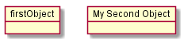
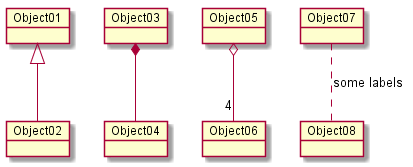
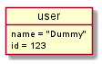

To be able to generate those diagrams, you must have Graphviz
software installed on your machine in the default directory c:\Program
Files\GraphvizX.XX or /usr/bin/dot.
You can have a look here if you have installed Graphviz somewhere else.
The description of object diagram is similar to the description of class diagram.
Note that you can disable the shadowing using the skinparam shadowing false command.
You define instance of objects using the object
keywords.
@startuml object firstObject object "My Second Object" as o2 @enduml |
|  |
It is possible to replace -- by .. to
have a dotted line.
Knowing those rules, it is possible to draw the following drawings.
It is possible a add a label on the relation, using " :
", followed by the text of the label.
For cardinality, you can use double-quotes "" on
each side of the relation.
@startuml object Object01 object Object02 object Object03 object Object04 object Object05 object Object06 object Object07 object Object08 Object01 <|-- Object02 Object03 *-- Object04 Object05 o-- "4" Object06 Object07 .. Object08 : some labels @enduml |
|  |
":" followed by
the field's name.
@startuml object user user : name = "Dummy" user : id = 123 @enduml |
 |
{} all
fields.
@startuml
object user {
name = "Dummy"
id = 123
}
@enduml
|